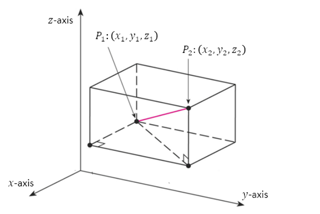

Lesson 1 – Basic Vector Arithmetic
The Distance Between Points in \( \mathbb{R}^3 \)
The spatial location of a point requires three pieces of information, described via three real numbers. In this sense space is three-dimensional and often referred to as \( \mathbb{R}^3 \).
In the following diagram, the distance between points \(P_1\) and \(P_2\) can be found via the distance formula. In \( \mathbb{R}^3 \) this expression is given below.
Distance Formula in \( \mathbb{R}^3 \)
\[
d =
\sqrt{
(x_2-x_1)^2+
(y_2-y_1)^2+
(z_2-z_1)^2
}
\]

Example
Find the distance between the points \(P_1=(1,2,-1)\) and \(P_2=(4,6,1)\).
Solution
Using the distance formula,
\[
\begin{aligned}
d
&= \sqrt{(4-1)^2+(6-2)^2+(1-(-1))^2} \\[6pt]
&= \sqrt{3^2+4^2+2^2} \\[6pt]
&= \sqrt{9+16+4} \\[6pt]
&= \sqrt{29}.
\end{aligned}
\]
Therefore, the distance between the two points is \( \sqrt{29} \).